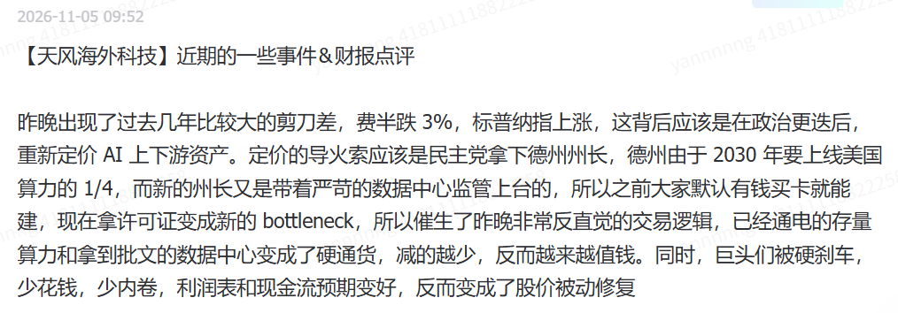
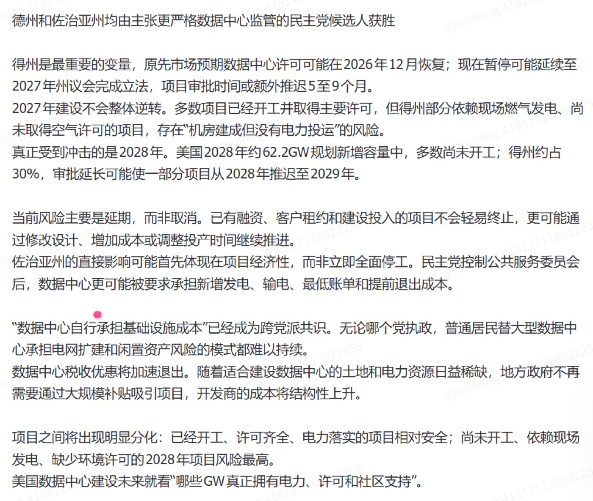
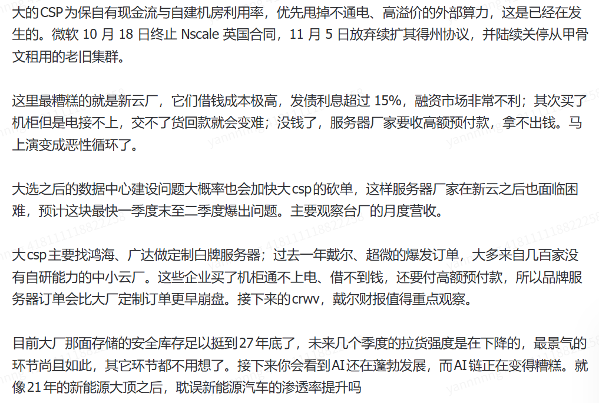

2026 实习生周报总览
暂无连续两周未更新提醒
从 2026.11.2 起，仅统计已结束的周一至周日；本周未结束不计入，只有标题、没有正文不算更新。每次抓取刷新时检查。
跟踪尚不足两个完整周，最早 11.16 开始判定。
| 组别 | 姓名 | 届别 | 最新更新 |
|---|---|---|---|
| TMT | |||
| TMT | 刘阳 | 28届 | 20261102-20261108 本周主要在校考试和参与学校课程，关注了近期的新闻和消息并进行了一... 11.8 |
| TMT | 屠智萌 | 27届 | — 11月以来暂无更新 |
| TMT | 吴政泽 | 28届 | — 11月以来暂无更新 |
| TMT | 袁沛齐 | 27届 | — 11月以来暂无更新 |
| 周期 | |||
| 周期 | 张宇 | 27届 | 11 月第 2 周 人保/财险 开放日调研交流总结 一、非车险：寻找增长点 个人非车是财险的增长的核... 11.7 |
| 组别 | 姓名 | 11.2-11.8 本周 |
|---|---|---|
| TMT | 刘阳 | 已更新 |
| TMT | 屠智萌 | 待更新 |
| TMT | 吴政泽 | 待更新 |
| TMT | 袁沛齐 | 待更新 |
| 周期 | 张宇 | 已更新 |
20261102-20261108
本周主要在校考试和参与学校课程，关注了近期的新闻和消息并进行了一定思考
- 反蒸馏是否会拉大中美模型差距？
- Source是X的观点整理
- 反蒸馏与国产模型追赶
- 蒸馏难度明显变高，短期蒸馏成本上升 5–10 倍，多则 20 倍。
- 替代方案效果都不如直接蒸馏：把一个问题拆成 10 个分别喂前沿模型再拼起来；拿摘要用其他模型做反向 rationalization；合成数据、数据生态采购。
- 曾有人认为可以通过第三方 CSP（如 Amazon）拿访问权限，但近期 Amazon 也出现较大封号潮。
- coding / agent benchmark 已刷到 90%+，再卷意义不大；明年下一个市场大概率是 AI for Science 或机器人，数据壁垒更高。AI for Science 真正做药的模型完全封闭（Claude 内独立模型层），只有药企合作能用，「连用都用不到，怎么蒸」；机器人基线数据更提取不出来。
- 反蒸馏的影响是多方面的：
- 措施：OpenAI / Anthropic 直接拒答或降级，订阅和非定向 API 都有大量反蒸馏措施，完整推理只有深度合作企业的 API 能拿到。
- 算力（认为是最大问题）：海外模型普遍 5–10T，学生太小听不懂老师，700B 蒸 3–5T 效果很差，最后回到预训练问题。训 3–5T 模型至少需要几万张 B 卡。
- 方向：coding 有代码可验证、agent 有 trajectory，好蒸；但前沿进步方向转向空间理解、computer use、视频生成，很难反向拿到完整数据。
- 结论：无论算力、数据还是训练方向，国产模型追赶越来越难，有买方认为没有长期价值。
- RSI 与中美差距
- 算力差距在拉大：国内厂商等效 B 卡一万到几万张，海外明年单个 AI lab 训练算力或达 4–6GW。
- 反蒸馏后中美差距预期从 3–4 个月拉长至约 12 个月；若海外明年实现 RSI，可能进一步拉到 18–24 个月，认为极有可能。
- 研究员瓶颈：训练从 10B 逐步 scale 到 5–10T，数据配比、算力分配、开几条线都是「炼丹」，50 个研究员只能开 50 条线；RSI 后线数由算力决定。
- 数据瓶颈：公开数据约 35–50T token，未定义数据需 Mercor 这类公司帮助跨过阈值，之后可靠模型自己合成扩量，最终也收敛到算力。
- 国内 3T 左右模型算力够用，下一代 10T 左右影响较大。B300 国内价格近期反而上涨（Rubin ramp 后理论上应走平或下行）。
- 蒸馏成本：有数据称国内厂商蒸馏年开销数亿美元（未验证），成本上升 5–10 倍即十几亿到几十亿美元，对比前三家（DeepSeek、Kimi、智谱）总融资约 100–150 亿美元，影响不小。Chat 补充：有厂商一天蒸馏约 30 万美金 token，年化约 1 亿美金。
- RSI 关键是 verification：硅谷都在讨论如何在模型 / agent 无法自我验证的领域拿到 outcome feedback。coding 里主攻 build system 和 CI/CD 的 feedback loop 速度。
- 空间方向：从 DCC 软件（CAD、雕刻软件）到仿真、具身大脑，再到真实世界 simulation；老游戏里完整的物理碰撞系统可提供空间理解数据，看哪家 frontier lab 先拿到。
- 当前 RL 是挖 fifty-fifty 成功率的任务，再往前一步可能不是 RL，核心是模型生成的东西能否突破人类 verify 的极限且仍能被 verify。marketing 同理：素材好看不等于线上 performance 好，需要真实 outcome 数据。
美国大选对数据中心建设的影响？
Semianalysis



11 月第 2 周
人保/财险 开放日调研交流总结
一、非车险：寻找增长点
个人非车是财险的增长的核心，增量来源于 健康、家庭、消费等新场景。管理层强调个人非车险具有风险分散、大数法则适用性强的特点，当前盈利水平较好。未来增长空间相对明确，需要关注边际综合成本率变化。
数据：2020—2025年，中国财险个人非车险保费由191亿元增至558亿元，CAGR达23.9%；2026年前三季度实现保费503亿元，同比增长16.3%，贡献财产险保费增量的97%。
目标：以2025年558亿元为基数测算，2030年达到千亿规模对应未来五年CAGR约12.4%，管理层认为有挑战性但有信心达成。

增长点1：健康险：事后赔付转向事前干预 & 健管业务独立创收
围绕“医、药、护、研”构建健康管理平台，服务前移到疾病筛查、慢病干预和药品直付，从而降低赔付成本。企业健康险用健管服务降低疾病风险以及提高粘性，同时收取健康管理费用 公司布局药品产业链降低实际医疗成本，后续药品直付比例有望提升 带病体保险拓客：以往难承保客户纳入业务。
健康管理是在传统保险业务之外的附属业务，带病体保险处于起步阶段，可以长期关注其增长，以及该业务的进入稳定盈利的时间。
数据 ：健康管理基于目前 1600 亿元保费，公司认为该业务空间有 400 亿。院外特药：减少 2500 万损失（减损率 18%）
目标：①带病体产品计划：十年内实现100万名患者管理、撬动百亿元价值规模。
②企业健康险：理赔支出下降空间为 8%，法人客户联合拓展的健康管理服务收入达到6亿元（目前 25A健管总收入5亿元）。
③医疗险：“十五五”期间，公司计划针对20%的重点理赔客户开展干预，推动整体医疗险赔付率下降2%。如果这一目标实现，意味着每100亿元对应医疗险保费可减少约2亿元毛赔付支出。
增长点 2：科技险：当前起步积累阶段成本已优于传统法人险
科技险目前的成本已优于传统法人险，考虑其前期以积累数据、完善模型为主，相比同业主要的先发优势明显，2028—2029年风险减量效果逐步显现，2030年前后进入价值释放阶段，带来的盈利会更显著。盈利释放预计滞后于规模增长。
数据：2025年中国人保广义科技保险保费达209亿元，市场份额居行业首位。2026H1科技活动保险保费同比增长18.5%。
目标：公司预计“十五五”期间，乐观情景下科技活动保险保费突破100亿元，并带动广义科技保险迈向千亿规模。以2025年209亿元测算，2030年实现千亿规模对应CAGR约36.8%，显著高于个人非车险千亿目标所需的12.4%。
二、投资端
2025 年1 月，《关于推动中长期资金入市工作的实施方案》以及证监会提出力争大型国有保险公司从2025年起每年新增保费的30%用于投资A股，餐叙中提到实际工作当中30% 的标准偏硬性。叠加利率中枢下行、传统固收资产收益率下降，保险资金增配权益的趋势较为明确。
新准则下，TPL 变动直接进当期损益，高股息OCI资产既能提供经常性投资收益，又能降低短期市场波动对净利润的冲击。2026H1中国财险FVOCI股票占股票投资的57%，高于集团整体43%的水平。在权益配置中枢抬升的过程中，管理层表明保险资金会进一步把权益资产从两边（OCI 分红和 TPL 成长）向中间（TPL 价值）靠拢，27 年TPL 价值份额可能上升。

当前OCI 分红账户目标股息率 5%，要求长期跑赢红利指数。TPL 价值账户股息率目标 3%，追求更高的隐含回报率。 TPL 成长及时兑现浮盈收益。

潜在问题
非车险盈利中枢：2026 年前三季度非车险 COR 达到 98%，明显好于 25 年 100.8%。如果剔除季节性大灾、准备金重估以及险种结构变化，未来非车险可持续的综合成本率能否稳定在 98% 左右？
个人非车险的盈利能力：公司此前提出个人非车险要从 2025 年的 500 多亿元保费规模向“十五五”期间超过 1000 亿来发展，今年上半年个人非车险的增长也比较快，达到 18%以上。目前个人非车险业务的 COR 在这样快速增长的目标下，能否维持历史上较好的盈利效率？（25H1 披露 89.9%）
法人业务：公司过去法人业务整体承保盈利能力相对较弱，今年借助非车险综合治理，上半年已经有 6% 左右的比较明显的改善。目前报行合一的费用改善有多少已经反映在业绩中？随着后续险种综合治理的逐步完成，2026年下半年及2027年是否仍有进一步释放的空间能够实现承保盈利？
车险 COR 的底部：2026 年前三季度考虑到大灾，车险 COR 仍然维持 94.3%，已经处于较优水平。未来人伤赔付标准提高、新能源渗透率上升，管理层如何看待未来 3-5 年的车险常态 COR？当前的低成本率有多少是可以持续的？
分红：公司的分红政策追求 全年 DPS 长期稳定增长，但考虑到新准则 TPL 账户对利润影响比较大，2026 年净利润同比来看压力比较大，公司当前的DPS是否还能保持稳定增长？
投资：Q3 的投资波动对单季的利润影响比较大，未来会希望把权益资产的利润表波动控制在什么程度？FVTPL 权益仓位会不会结构性下降？未来对长期投资收益率和单季利润稳定性的综合战略是什么样的？
备查数据

2025 年，财险、寿险、健康险三家子公司分别贡献 69.8%/18.7%/13.0%。
1、2026 年前三季度，车险保费 yoy+0.1%，车险当中新能源汽车的增长yoy+31%，是增长的主要动力，新能源车险在车险保费里的占比超 22%，2024 年起新能源家庭自用车实现承保盈利。
2026 年前三季度，财险保费仅增1.7%，但承保利润增长 11.3%，承保盈利能力带动。人保归母净利润同比 -32%，但同期财险承保利润+11.3%。
2026 年上半年，财险的原保险保费份额市场占比 33%。
2、财险的优势：综合费用率低，2023-2025 年的赔付率上升（70.4%->74.4%），但综合费用率下降更多（26.5%->20.9%）。意味着综合费用率-1.6%。主要来自于车险综合改革和“报行合一”监管。
报行合一
3、非车险 yoy+3.2%，车险的增长动力明显偏弱。非车险整体依旧不盈利。
11 月第1周
中信证券 的业绩稳定性来源——自营投资业务
2016 年以来 TTM 归母ROE 历史 P10% - ROE 标准差，纵轴代表历史盈利下限水平，横轴代表 ROE 的波动。
中信证券的历史P10为7.18%，在22家可比券商中排名第一。波动率处于低波动梯队，ROE 标准差为 1.62%，明显低于样本中位数 2.50%。在大型券商中仅仅略逊于华泰证券。中信证券兼具较低盈利波动与较高盈利下限，历史ROE呈现出区别于多数同业的稳健性特征。

过去 10 年行业普遍变得更稳定，中信证券属于一直以来的高下限，低波动的“好学生”。在不同的周期阶段中始终维持着同业第一的盈利下限。

从时序上看，中信的相对盈利优势具有很强的持续性， TTM 归母 ROE 在 2017 年之后 连续 39 个季度高于行业中位数，其中33 个季度高于行业 P75 水平。2026Q3中信的绝对ROE环比回落，但相对优势仍然保持高水平。

在行业整体 ROE 处于低位时，如 2018 年、2024 年，中信在行业低景气时依然保持较高的资本回报，期间ROE中位数为7.28%，居于行业首位，明显领先于行业低景气ROE中位数4.54%，具高盈利下限与较强抗周期韧性。

在全行业 ROE 同比下降的区间中，下行捕获率反映了 ROE 的抗跌水平。当行业ROE下降1个百分点时，中信ROE的历史同期下降幅度仅约0.58个百分点。中信位于下行防御能力第一梯队，在大型券商里排名第一，全样本中排名第三。相比之下，华泰为0.65、招商为0.87、广发为1.03、国信为1.56。

综合考虑上行捕获和下行捕获来看，其上行捕获率71.25%，下行捕获率57.53%。上行捕获强于下行捕获，属于优质的防御型券商。

从 beta 来看，中信证券β为 0.72，R2 为 76%，中信仍具有较强的行业周期关联性，但变动幅度相对温和。

中信证券经营波动从收入端到归母利润端均处于全行业较低水平。中信证券营业收入、营业利润及归母净利润波动率分别为6.29、3.92、2.71个百分点，在22家可比券商中分别位列第5、第5和第4低。

一般来说，从波动传导看，收入到归母净利润的波动率会逐级压缩，压缩能力反映了企业平抑收入波动、稳定贡献利润的能力。
中信的相对优势体现在其营业收入本身波动较小的情况下，从收入到利润的压缩能力依旧保持较强能力。尤其是营业利润到归母净利润的波动压缩能力更强。

相较华泰证券，中信收入及营业利润波动略高，但最终归母利润波动反而更低，反映了公司整体在所得税、少数股东损益等营业收入外因素的实际缓冲。

中信证券的五项业务收入份额与波动贡献份额高度接近，而华泰、招商、广发、国信等券商均存在较明显的业务波动贡献集中现象。左边是各业务对营收的贡献，右边是各业务对总体波动的贡献。

中信并没有出现某项业务的波动贡献显著超过其收入份额的情况，份额和波动基本匹配。特别是投资业务收入占比已达35.50%，但波动贡献并没有进一步放大。
相比之下，华泰证券和广发证券投资业务的波动过大，其波动贡献较收入份额高出6.46% / 13.01%。国信证券手续费业务波动较大，波动贡献较收入份额高出13.12个百分点。

左侧衡量各项业务的绝对波动率，右侧衡量相对于自身业务规模的波动程度。中信的稳定性优势集中体现在手续费、投资和利息净收入等核心业务。其收入稳定性很大程度上来源于内部各个核心业务本身波动较小。

尤其是手续费和投资业务这两个合计贡献超八成的核心业务，中信在这两个业务上波动控制非常出色。

回顾历次市场逆风时期：
2018 年市场逆风时期，以华泰作为对照，中信证券归母盈利降幅显著低于华泰，主要得益于投资业务相对较小的负向冲击，以及营业支出调整与其他利润项目的共同缓冲。分业务看，中信与华泰投资业务净收入分别减少37.67、47.09亿元，对期初权益的负向贡献分别为2.51、5.39个百分点，投资业务冲击差异是两家公司盈利韧性分化的首要来源。

中信营业支出形成 1.24 个点的正向贡献，在 18 年逆风期对成本的控制明显强于华泰的 0.72%。

2022 年时期，中信的归母利润降幅在21家有效券商中排名第4小，较四家头部同业平均少下降2.05个百分点。中信经历投资、手续费及其他收入下滑之后，依靠营业支出减少等因素，将归母利润的标准化降幅控制在0.85个百分点。印证了其投资业务的韧性，以及成本控制的能力。
相对其他头部券商，其在投资、利息净收入和营业支出的韧性尤其明显。


2022年大部分券商都遭遇投资收入下降，中信投资业务标准化负贡献为1.92个百分点，不仅低于四家头部同业平均的3.66个百分点，也明显小于全行业有效同行中位数的4.26个百分点。

2023 年下半年到2024 年上半年期间，中信证券的手续费带来了超出同业平均的拖累。


中信证券2024年逆风期手续费业务的相对弱势主要由投行业务拖累（yoy -52.7%)，其本来的优势传统业务在一级市场萎缩环境下有很高的盈利敏感。横向看中信投行业务调整幅度明显大于头部同行。

过去三轮逆风期，中信在自营投资和成本控制方面展现出了相较于其他券商的优势，核心业务在行业整体下行区间保持韧性，是重要的正向缓冲。相对而言，中信证券的投行业务的规模优势具有一定周期性特征：在一级市场景气上行阶段有利于利润释放，但在市场调整、融资活动收缩时，也可能形成更大的收入下行敞口。
我们来详细一下自营投资 和 成本
过去5 年，券商收入结构中投资业务的占比明显提高，可比的18 家券商合计，其投资业务净收入占比近 4 成。中信证券的比例还要更高，已经形成了相对更高的投资收入依赖度。

相较于 10 年前，营收TTM上涨了 1.79x，投资收益已经扩大到了 3.31x，投资收入占比提升主要来源于自身收入规模扩张的驱动。

中信的投资业务的逆风韧性来源于两方面，2022 年投资的优势主要由收益端贡献，收益率强于同业 1.76%。2024 年收益率承压时，规模扩张又快于同业 0.70%，抵消了收益率端的回落。

中信自营投资收益率过去七年平均领先其他头部券商，投资杠杆也高于其他头部券商。当前中信证券每 100 元归母股东权益对应 293 元金融投资资产，产生 11.04 元投资业务收入。

中信长期具备较高的投资收益率中枢，是盈利韧性的重要来源，支撑其自营收入的长期基本盘。

从2023年末以来，中信OCI资产累计增长约1,274亿元，其中约90%的净增量来自其他权益工具投资；但2026年初以来，OCI净增量几乎全部来自其他债权投资。

成本控制方面，我们发现这几轮逆风期，中信的主动费用收缩并不大，主要是减值改善和其他业务成本的改善。

SFISF（证券、基金、保险公司互换便利）
事件
11月2日上午，金融管理部门围绕进一步完善证券、基金、保险公司互换便利（SFISF）、股票回购增持再贷款政策工具分别召集相关金融机构召开座谈会。同日，中国人民银行公告显示，央行将于11月3日开展证券、基金、保险公司互换便利操作，互换期限1年，可视情展期。本次第三批目前有31家证券、基金公司申报需求，申请额度超过1000亿元。要求相关机构“报足、做实”工具操作量，特别强调拿到央票后尽快融资、开展投资。另外，近期证监会拟对为维护公司价值及股东权益所必需而回购股份（简称护盘式回购）作调整优化，正在研究融资保证金比例、可冲抵保证金证券折算率等指标的逆周期优化。

政策机制：SFISF通过“以券换券—质押式回购融资—权益投资”的方式，将券商持有的股票、ETF、债券等资产转化为融资能力。本质上是央行帮助券商升级抵押品，货币市场提供现金，券商负责投资和承担风险，理论上依然是券商增加权益风险敞口的杠杆投资行为。
操作特征：本次操作距离上次已逾 22 个月，从节奏和时机上来看具有明显的逆周期择机使用的特征。过去两批 1050 亿元已经多次展期，实际上是作为长期资金支持。
参与情况：2024 年首批 20 家机构的申请额度超 2000 亿元，本次 31 家超 1000 亿元，实际操作额有待观察。2025 年券商分类评价已经将积极参与 SFISF 相关工作纳入加分项，并增加自营权益投资相关评价指标，本次监管进一步强调“报足、做实”，机构存在监管政策激励。券商一般都会尽可足额顶格申报。
政策优化：互换费率本身比较低（20bp-10bp），下降带来的直接费用压降并不高，降费率主要是促进实际投资，缓解内部风控和投资约束。
历史复盘

第一批： 2024年9月24日央行首次提出SFISF，10月10日正式创设5000亿元额度，市场开始关注政策资金的潜在配置方向，当日红利、中字头、银行等板块走强，科技成长板块调整。10月18日首批20家机构获批，申请额度超2000亿元，操作细则及回购增持再贷款同步落地，当日上证指数上涨2.91%、创业板指上涨7.95%。10月21日首次完成500亿元操作，中标费率20bp，但当日券商板块并未领涨。10月25日媒体进一步披露，工行、农行等银行已参与相关质押式回购交易，政策融资逐步落地。
第二批： 2024年12月31日央行预告第二次操作，备选机构池扩大至40家；2025年1月2日完成550亿元招标，中标费率降至10bp，同时扩大合格质押品范围并降低质押登记费用。当日上证指数下跌2.66%、证券板块明显调整，次日市场继续下跌。相比首次推出时，市场对工具机制已有较充分认识，且首批500亿元实际操作规模与超2000亿元申报需求的差异已得到体现，新增操作的政策信号效应相对有限。

市场资金结构分化，逆周期承接需求
10 月以来，融资余额-1838 亿元，股票 ETF 净申购+3627 亿元，杠杆资金在撤退，ETF 资金逆势流入。SFISF 和股票回购增持贷款、及推动主动ETF加快建仓等方式，分别增强金融机构、上市公司及基金产品的权益购买能力，意在缓解市场下行时的资金承接压力，引导形成逆周期买盘。

融资成本较前两次明显下降。
11 月 2 日R007为1.41%，DR007为1.36%，两者利差约5bp（前两次利差为 23bp/15bp）。假设本轮互换费率维持10bp，券商SFISF 开展7 天回购的融资成本可能在 1.5% 左右（相比前两次-55bp/-42bp）,有利于改善权益投资的持仓经济性。
行业
短期估值修复先于盈利兑现。11月2日，中证全指证券公司指数上涨4.60%，部分券商个股涨幅超过6%，反映Q3 业绩的利空出尽和市场对稳市政策的积极预期。但考虑到SFISF规模、成本及回报，对行业短期利润的直接贡献预计相对有限。本轮政策对券商板块的影响首先体现为稳定市场预期、缓解流动性尾部风险及降低风险折价，推动估值修复；后续若市场逐步企稳、交投活跃度恢复，才有望改善行业盈利与ROE。
资金投向：Q3自营波动加剧，政策资金或更偏向稳健配置。 从前两批SFISF实际投向看，资金主要配置指数成分股及股票ETF，部分券商用于长期OCI权益投资、做市及方向性投资。本轮监管强调资金尽快落地，考虑到大规模资金配置的效率与风险控制要求，预计流动性较好、交易容量较大的宽基ETF及大市值股票仍是主要配置方向。
从券商资产负债表看，2026Q3行业交易性金融资产环比下降3%，其他权益工具投资及其他债权投资分别增长8%和2%，呈现出交易性资产收缩、OCI资产扩张的结构性特征。考虑到Q3自营投资收益大幅回落，且前三季度已积累较高盈利，券商Q4可能更重视全年利润稳定性及风险敞口管理，继续扩大高波动方向性投资的边际意愿或有所减弱。
监管资本：行业整体充裕，头部券商资本使用效率改善更具意义。2026H1行业平均风险覆盖率约285%、净稳定资金率约164%，整体远高于监管预警线，并不存在普遍性资本不足。 SFISF通过改善存量资产融资能力，并降低符合条件的专项权益投资对监管资本及稳定资金的占用，可能在不同比例增加监管资本消耗的情况下支持权益投资扩张。